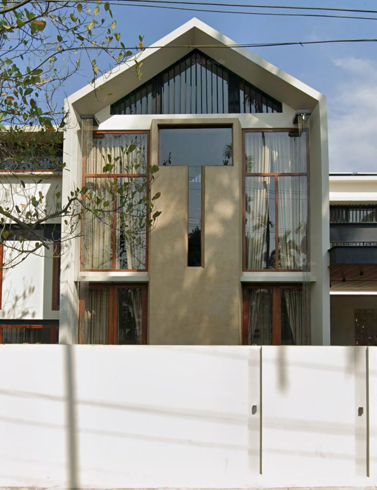
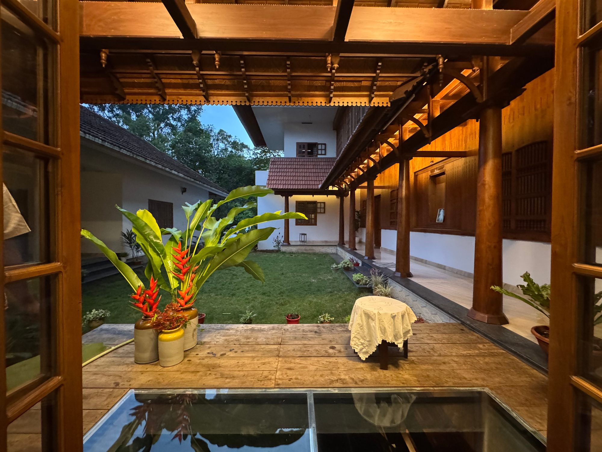
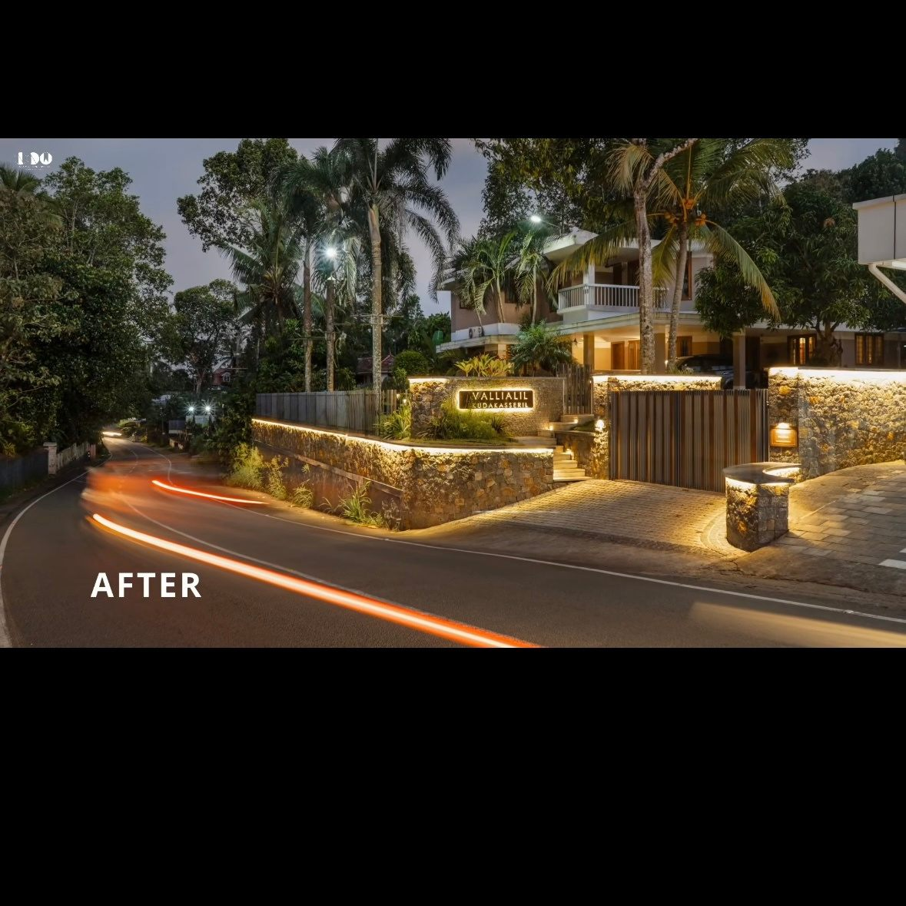
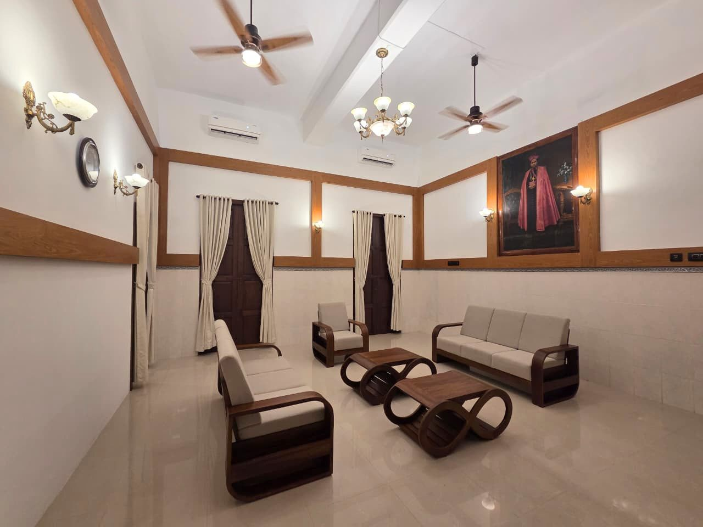
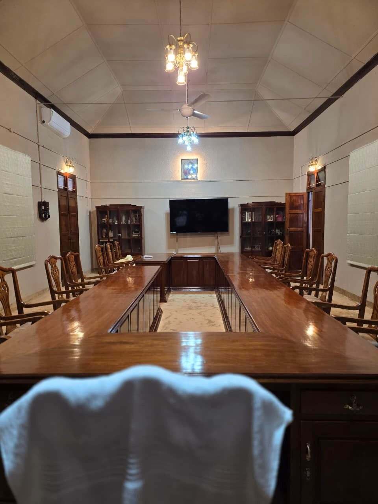
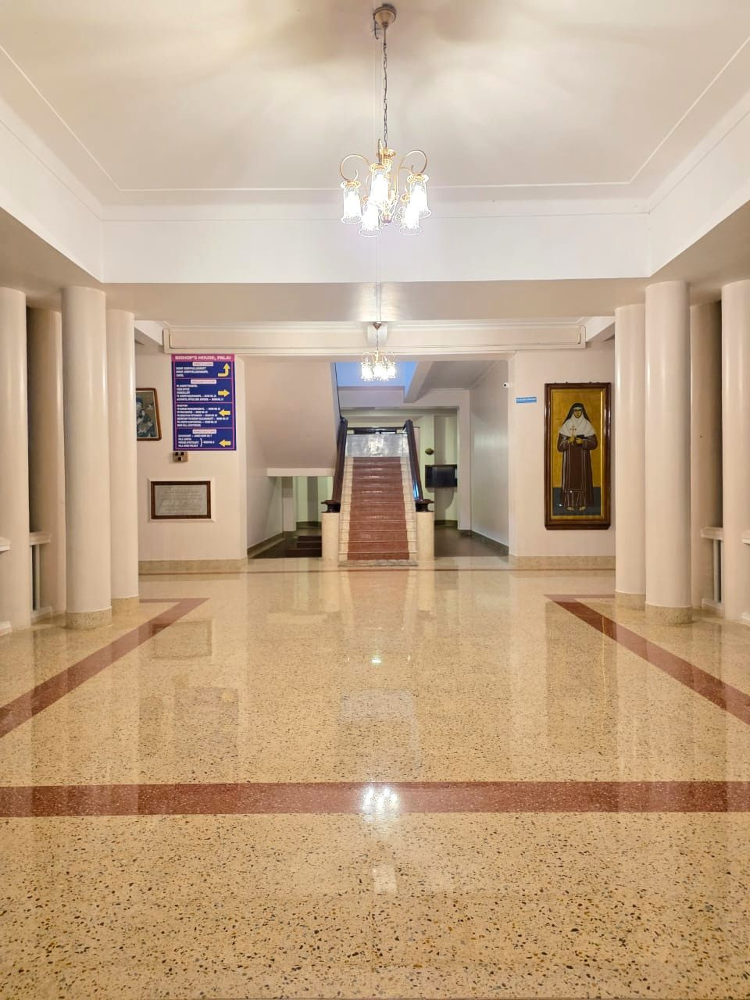
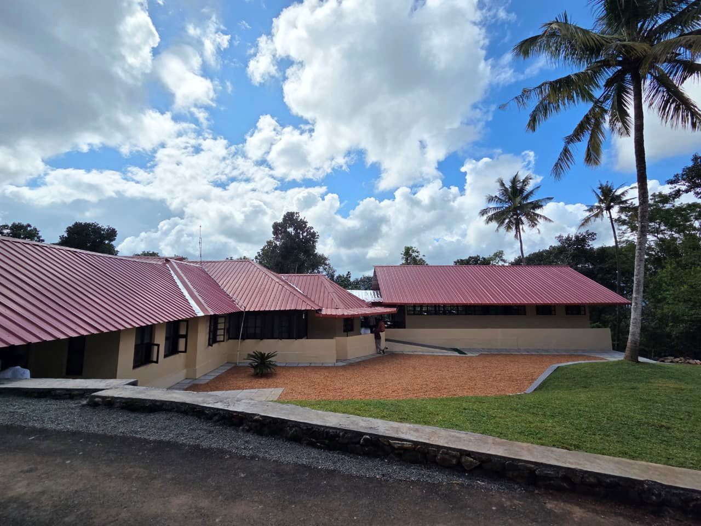
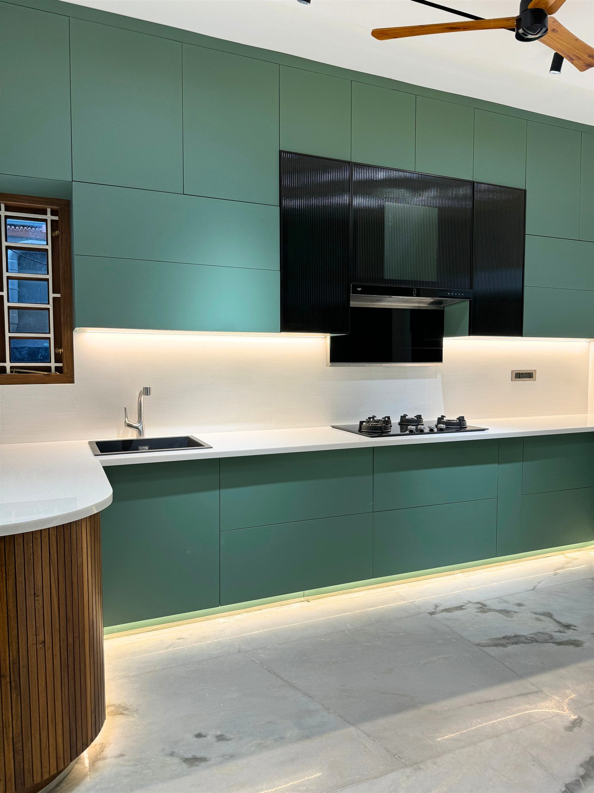
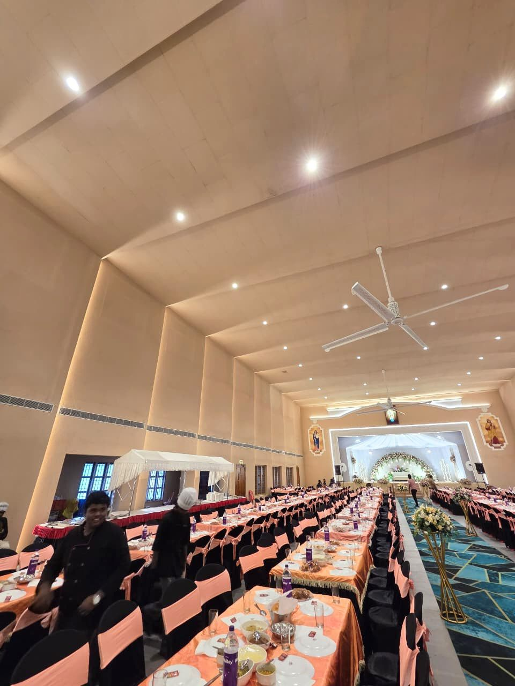
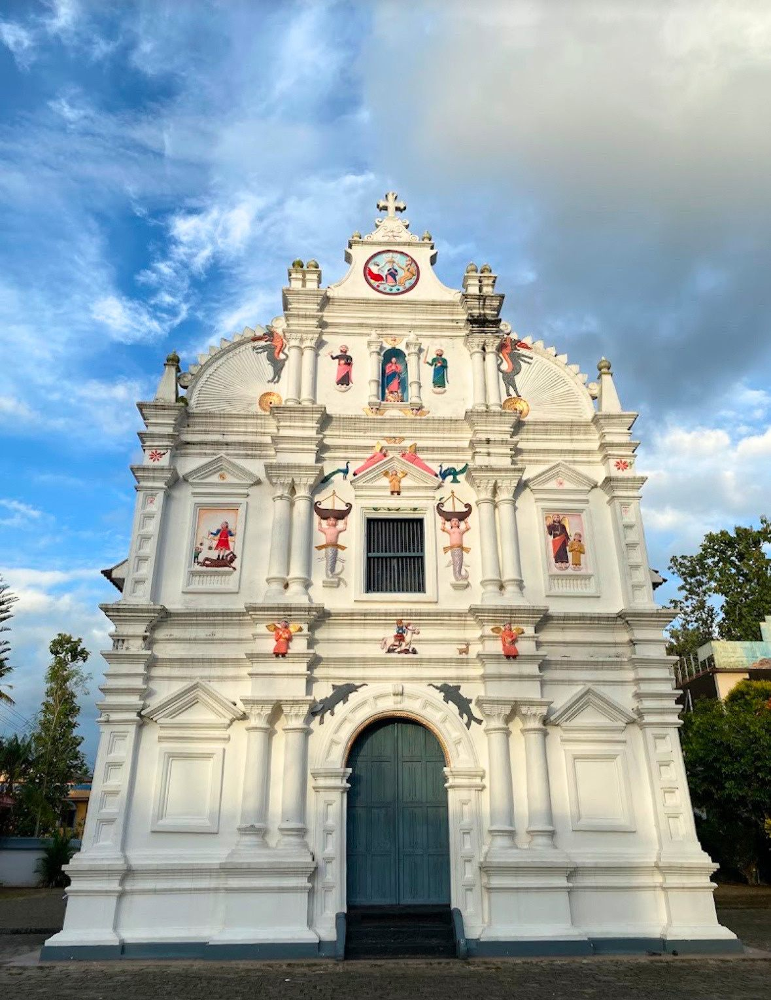

ResidentialOur Portfolio
Projects Built on Transparency.
From private residences to heritage restorations, every Sky Grace project is managed with the same discipline: full documentation, verified quality, and complete financial visibility.

ResidentialThe Nalukettu

LandscapeRubble House

VVIP ProjectSuite for the President of India

RestorationCuria Room

RenovationBishop House

RenovationMar Aprem Seminary

InteriorCelebrity Residence

CommercialMar Sleeva Convention Centre

RestorationSt. Mary's Knanaya Forane Church
No projects match this filter yet.